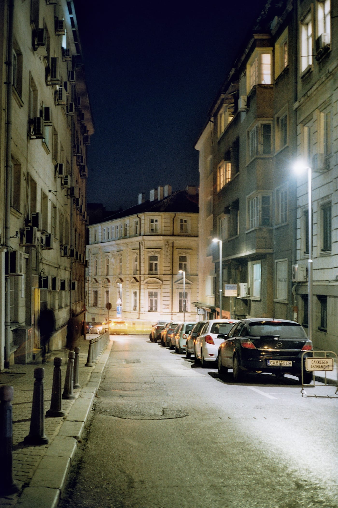
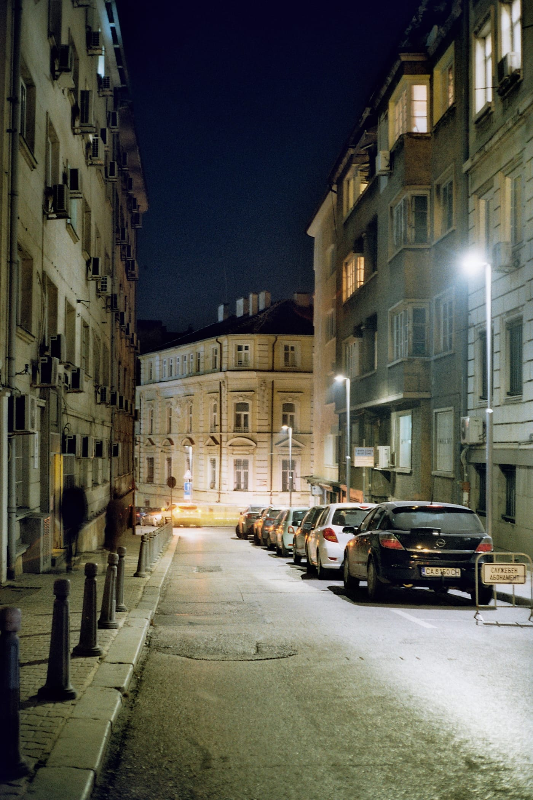
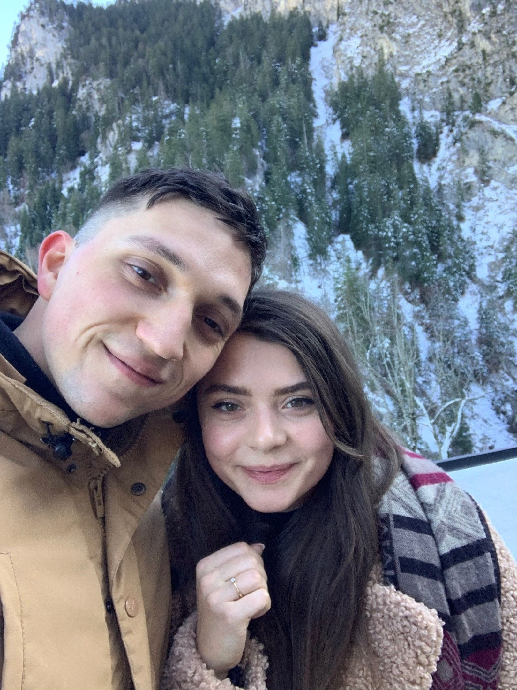

←
Go back
2019 in review
2019 was probably the most eventful year I've had. It was so densely packed with stuff happening around me, that at the end of it it feels that I can't even recall most of them. Luckily, this year I was almost consistent with writing my personal journal, and that helped me extract a lot of these forgotten memories out of my hazy mind.
Reminisced on the 04th of Jauary 2020
Key learnings in 2019
- For things to work out, they need persistent work and constant maintenance
- Anxiety destroys confidence and self-worth
- Slowing down helps one enjoy the process of creating
- Having good relationships with your spouse, family and friends is very nourishing
- "Nothing has such power to broaden the mind as the ability to investigate systematically and truly all that comes under thy observation in life." - Marcus Aurelius
- The only permanence is impermanence
The good things of 2019
Visited 8 different countries
- 🇳🇱 Amsterdam, Netherlands
- 🇪🇸 Barcelona, Spain
- 🇩🇪 Cologne and Düsseldorf, Germany
- 🇨🇿 Prague, The Czech Republic
- 🇸🇰 Bratislava, Slovakia
- 🇮🇹 Rome, Italy
- 🇦🇹 Vienna, Austria
- 🇵🇹 Lisbon, Portugal
- 🇩🇪 Füssen, Germany
Travelling the world is my most effective mechanism for reminding myself of my innate biases and stereotypes. This year I was lucky enough to have the time and resources to visit 8 different European countries. That's eight different cultures, languages, customs and traditions that I had the pleasure to explore. I was filled with joy when I had the time to compare, discover and contemplate on the similarities and differences between these places.
Started learning Italian 🇮🇹
I've wanted to learn Italian for the past 8 years, yet I lacked the discipline and resources to dive into it properly, but this year things changed. Diana and I came back from our second trip to Rome and decided that it's time - we're diving into the world of Italian culture, customs and history.
For the past 4 months, I've reached a level where if I get lost, hungry, thirsty or technically dying, I'll be able to find my ways in Italy. Jokes aside, we both were fortunate that there's a fantastic school in Sofia, where real Italians are teaching Italian in Italian. (I've purposefully repeated this word, okay!). Thanks to their "full-immersion" method, just for 4 months, Diana and I reached a level of understanding which is usually reached for at least 8.
Got in the best shape of my life
In 2019 I finally built the habit and the discipline to visit the gym regularly. Thanks to this, it's my first year in which I can say that I'm almost pain-free from the significant injury I had two years ago - two herniated discs in the lower back area. That was my proof to the people who said I can't go through this without surgery.
It was a long way from not being able to bend to pick something up nor being able to squat with just the bar, to having regained my full range of motion of my lower back and doing sets of back and front squats.
Reaching this "optimal" physical performance, I'll finally be able to start my metamorphosis to boxing. I've been longing to indulge myself in the world of combat sports for the past two years, and I can't wait to finally feed my hunger. I feel like I've built a solid physical foundation which is going to protect me from injuries if of course, I keep my ego in check.
Started shooting film again
The lack of the screen on my camera and having the immediate feedback of what you've captured, makes me more present when I go out and take my photos. And since I usually carry at least one of my cameras with me when I go out, I'm in such state that I discover the city I grew up in once again.
You might say - "Oh how very hipstery of you, Alexander" but for me, there is something special in the joy of delayed gratification. It feels so refreshing, especially when we live in a world which is based on constant consumption. We're double-tapping, sharing and retweeting like crazy, just for that quick dopamine kick, slowly shifting how our brains seek pleasure. I switched consuming the lives of others with something I really enjoy - hearing the shutter click of my trusty Yashica.
 

The top two photos were taken with Yashica Electro 35G and the bottom one with Olympus MJU 2
Finally felt content with my development as a professional
Holy fuck, even nine months later it feels great! I got hired in Toptal's core team. This is by far my most significant achievement regarding work. I'm very proud and satisfied with this achievement - working in one of the most prominent remote teams in the world means a ton for me. Getting into this fantastic design team was the proof to myself, that I should carry myself with a bit more confidence for who am I as a professional.

Part of the design team at the ByDesignConf in Bratislava, Slovakia. Courtesy Of Lubos Volkov.
Joined a mentorship program
This year I joined the ABLE Mentor initiative. Through this platform, I’ll be able to teach design to teenagers and young adults from around Bulgaria. It is a very interesting, wholesome experience, when you have the ability to meet motivated young people, looking to develop themselves as professionals. Currently I’m teaching the basics of product design to a 17 year old lad, who’s trying to explore the field of design and hopefully get accepted to study this profession in The Netherlands.

Had our first anniversary living in our own place 🏠
Transforming a literal ruin to a cosy home took a giant toll on my family financially, physically and mentally. I’m forever grateful for all the work my family and friends put into this. Seeing how a home shifts through the years is a very interesting thing to do. It feels like a home is almost like a living organism and the way it changes is influenced by the ever changing interests and likings of the owners. That aside, I’m a very lucky person, since I live with my fiancee, which is the ultimate-interior-desginer-without-interior-design-degree so that helps as well.


Oh I just mentioned "fiancee" - We got engaged
The most significant achievement of them all is the fact that she said "yes". I can't stress enough how much Diana has changed my life for the better. I don't want to get all mushy, but the point being is that after four years it's official - we're going to get married, and this brings a new level of emotional depth to my life - I've never felt more content with the current state of our mutual growth. Realising that I'm a fortunate human being is always helpful when one wants to shift their perspective on life for the better. Every single day I'm grateful that our paths crossed.
My plans for 2020
New goals and tasks
- Ship and maintain first side project with Petar
- Revive my design blog
- Start doing combat sports again
- Take better care of my mental health
What I want to improve
- Get a cleaner diet
- Increase my focus and consistency in my work and side-projects
- Read more books
- Continue my coding journey
Happy New Year to all of us! Keep pushing, keep being hungry and stay on the path! Alexander